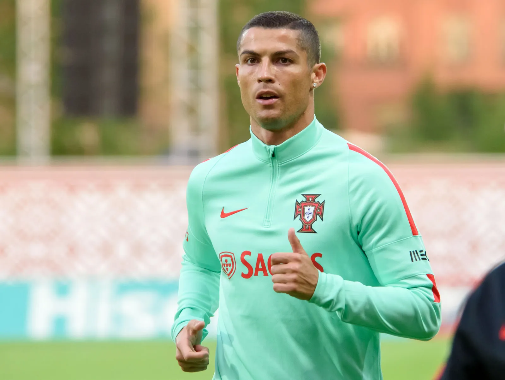
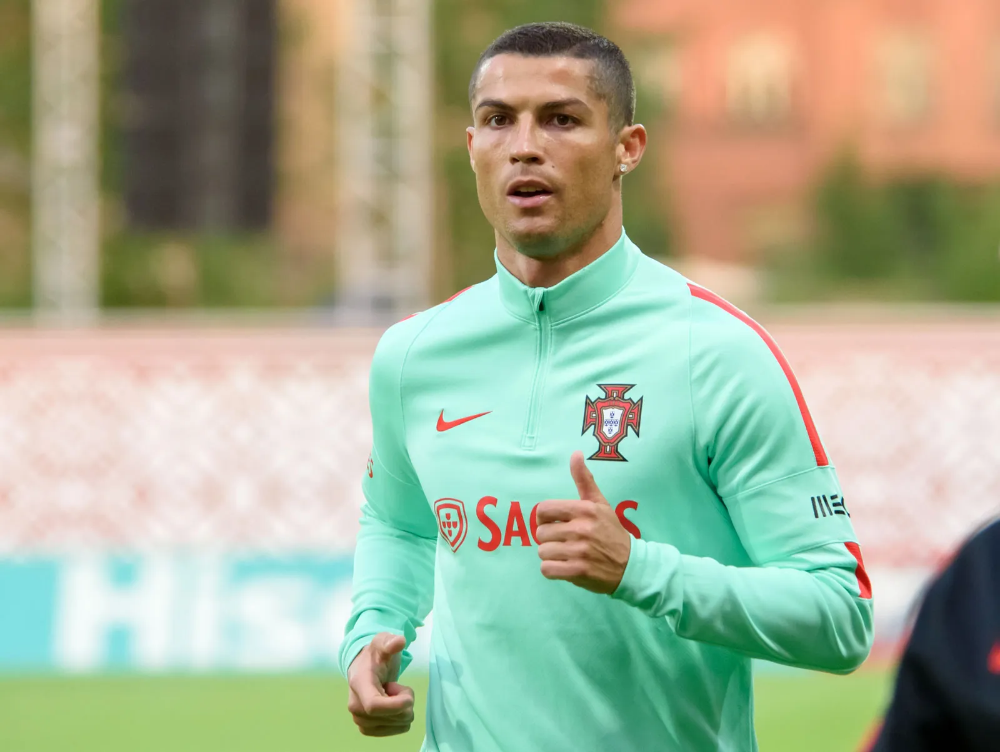

About 258,000,000 results (0.75 seconds)
Cristiano Ronaldo
Portuguese footballer
 

Stats
World Cup . Portugal . 2022
Matches
5
Goals
1
Assists
0
Yellow cards
0
Age
37 years old (5 February 1985)
Salary
62 million GBP (2023)
YouTube . TMDB
Top stories
News about goal, Cristiano Ronaldo and Al Nassr
People also ask
47 minutes ago — Cristiano Ronaldo dos Santos Aveiro GOIH ComM is a Portuguese professional footballer who plays as a forward for and captains both Saudi Professional...
Cristiano Ronaldo's highlights and achievements. View Highlights.
Videos

543m Followers, 550 Following, 3432 Posts - See Instagram photos and videos from Cristiano Ronaldo (@cristiano)
6 hours ago — One of the world's best football players, Cristiano Ronaldo set many records while playing for Manchester United, Real Madrid, Juventus and the Portuguese ...
6 hours ago — One of the world's best football players, Cristiano Ronaldo set many records while playing for Manchester United, Real Madrid, Juventus and the Portuguese ...
6 hours ago — One of the world's best football players, Cristiano Ronaldo set many records while playing for Manchester United, Real Madrid, Juventus and the Portuguese ...
6 hours ago — One of the world's best football players, Cristiano Ronaldo set many records while playing for Manchester United, Real Madrid, Juventus and the Portuguese ...
6 hours ago — One of the world's best football players, Cristiano Ronaldo set many records while playing for Manchester United, Real Madrid, Juventus and the Portuguese ...
Related Searches

About
Cristiano Ronaldo dos Santos Aveiro GOIH ComM is a Portuguese professional footballer who plays as a forward for and captains both Saudi Professional League club Al Nassr and the Portugal national team. Wikipedia
Profiles
Stats
Al Nassr
| League | Matches | Goals |
|---|---|---|
|
Saudi Pro League
2022-23 |
2 | 1 |
|
Saudi Super Cup
2023 |
1 | 0 |
People also search for